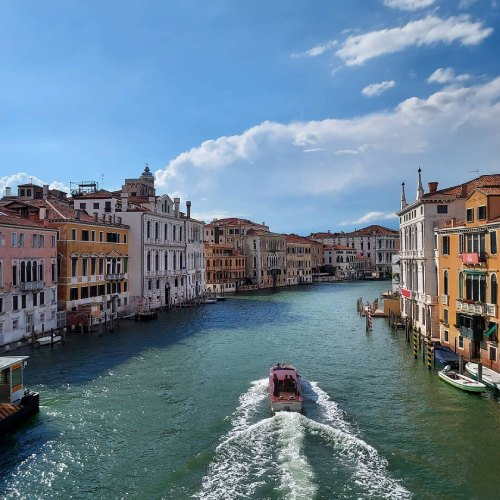

Dolomiterna
Upplev magi på både sommar och vinter
I norra Italien reser sig Dolomiterna som ett mästerverk av natur och tid.
Här möts dramatiska bergstoppar, kristallklara sjöar och genuina alpbyar som bjuder på både
stillhet
och
äventyr.
Vid Lago di Braies speglar sig bergen i turkost vatten, en plats så vacker att den nästan känns
overklig.
Vandra längs de slingrande lederna på sommaren, genom blommande alpängar och frisk fjälluft.
När vintern kommer förvandlas landskapet till ett paradis för skidåkare, med Selva Val Gardena
som
en av
resebyråns mest uppskattade resemål.
Oavsett årstid bjuder Dolomiterna på oförglömliga upplevelser, där naturens skönhet och stillhet
skapar
minnen som stannar kvar länge.
Venedig
En stad byggd på drömmar och speglingar.
Här glider gondolerna stilla genom kanalerna, förbi broar, palats och torg fyllda av historia och liv.
Venedig är en plats att uppleva med alla sinnen, tidlös, romantisk och helt unik. Är man intresserad av
att uppleva delar av norra Italien, har vi nu ett kampanjerbjudande!
